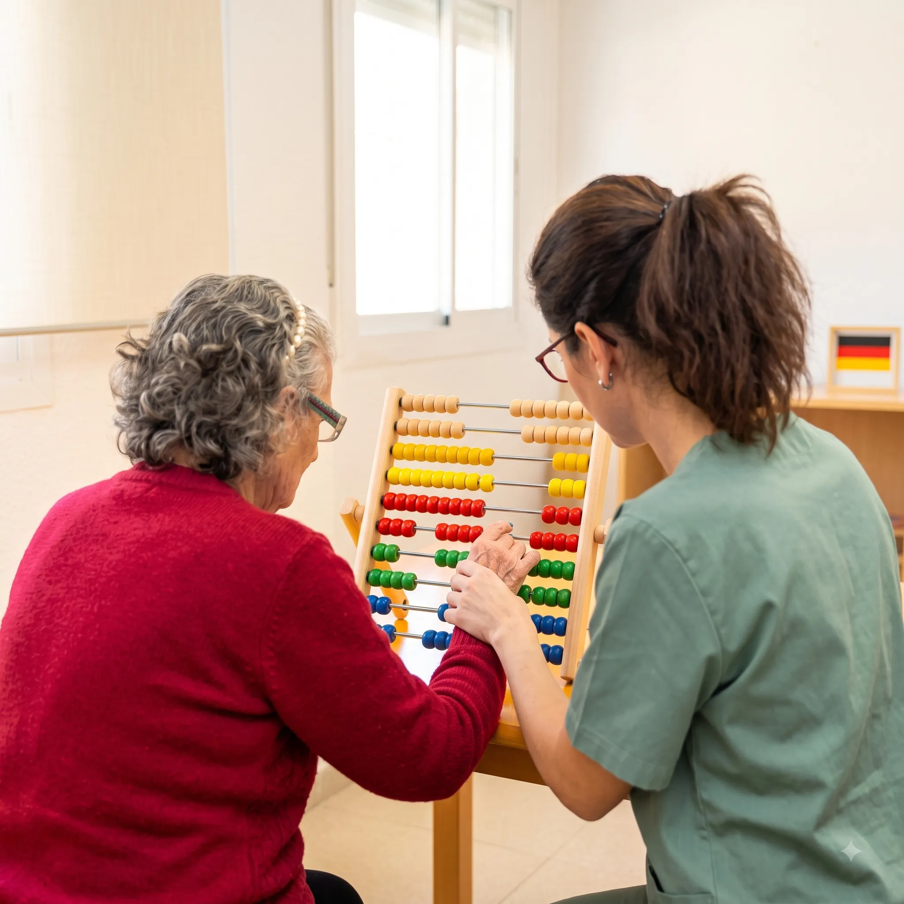
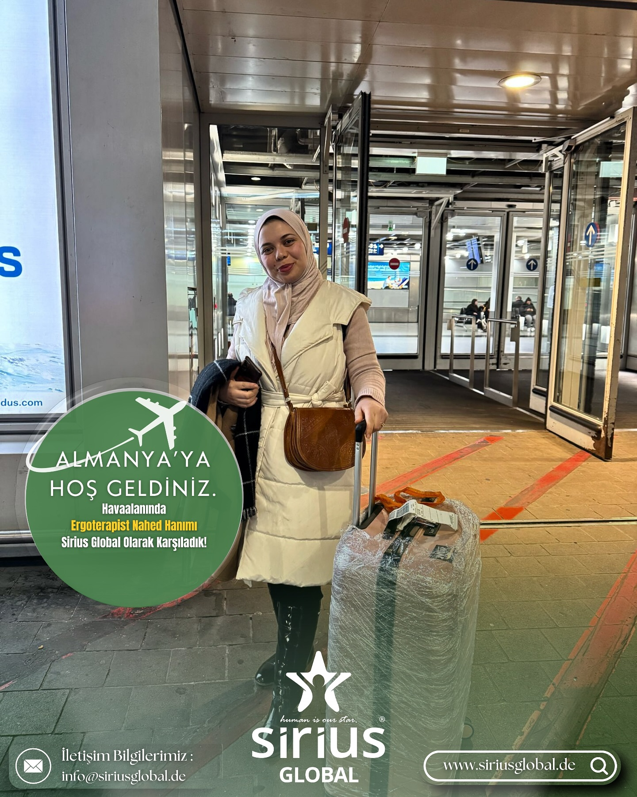

Almanya'da Ergoterapist Olarak Kariyerinizi Başlatın
Almanya'nın büyüyen sağlık ve rehabilitasyon sektöründe lisans mezunu Ergoterapistler (Ergotherapeut/in) için yüksek nitelikli istihdam fırsatları sunuyoruz.
Sirius Global danışmanlığında mesleki denkliğinizi alıyor, B2 Almanca eğitiminizi tamamlıyor ve Nordrhein-Westfalen (NRW / Essen) merkezli kliniklerde hemen göreve başlıyorsunuz.

Ergoterapistler İçin Almanya Denklik Adımları
Ergoterapi mesleği Almanya Federal Hükümeti (anerkennung-in-deutschland.de) kararlarına göre regüle meslekler (Reglementierte Berufe) statüsündedir.
1. Eşdeğerlik İncelemesi
Lisans diplomanızın ve staj saatlerinizin Alman Eyalet Sağlık Dairesi (Bezirksregierung) tarafından incelenerek denklik verilmesi.
2. B2 Dil Sertifikası
Hasta iletişimi ve mesleki pratik için B2 ÖSD, Goethe veya Telc Almanca sertifikasının temin edilmesi.
3. Ücretsiz İşe Yerleştirme
Klinik mülakatları ve iş sözleşmesi aşamaları adaylarımız için tamamen ÜCRETSİZDİR. Sadece denklik danışmanlığı ücretlendirilir.
4. Karşılama & Konaklama
Sirius Home servisimiz ile havalimanında karşılama, eşyalı ev teslimi ve ikametgah kaydı (Anmeldung) desteği.
Ergoterapistler İçin Uçtan Uca Destek
Almanya'da ergoterapi alanında uzmanlaşmış kadromuz ile süreci 3 adımda güvenle yürütüyoruz:
- Vekalet İle Resmi Başvuru: Denklik dosyanızın Almanya yeminli tercümeleriyle eksiksiz sunulması.
- Klinik Eşleştirmesi: Almanya'daki pediatrik, nörolojik ve ortopedik rehabilitasyon merkezlerinde iş imkanı.
- NRW İş Kanıtı Zusage: NRW eyaleti kuralına uygun yazılı iş sözleşmesi kabul yazısı hazırlanması.

Ergoterapistler İçin Denklik Tamamlama
Eyalet kararına (Bescheid) göre eksik ders saatleriniz için 2 yöntemden biri seçilerek süreç tamamlanır:
A) Anpassungslehrgang (Pratik Uyum Eğitimi)
Almanya'da hastane veya merkezlerde çalışarak pratik eksikliği tamamlama.
B) Kenntnisprüfung (Bilgi Sınavı)
Mesleki yeterlilik sınavına girerek tam devlet denkliğini (Urkunde) elde etme.